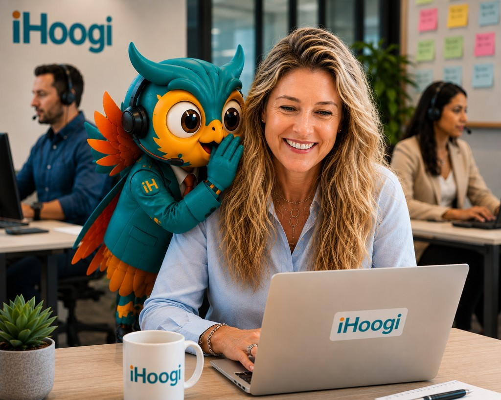
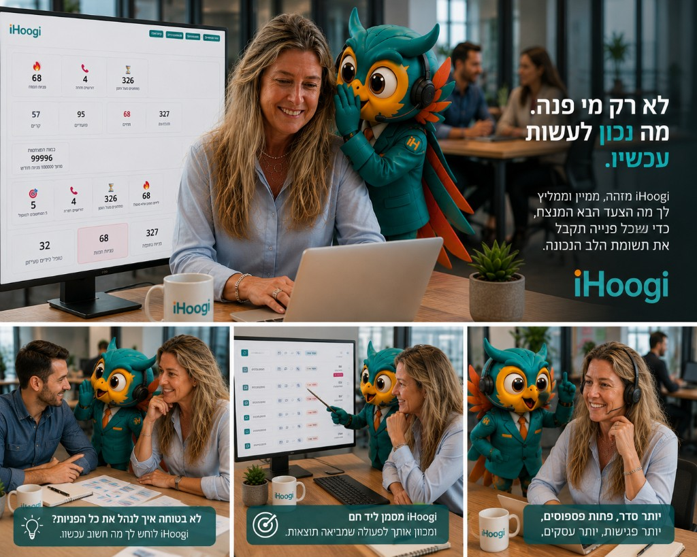
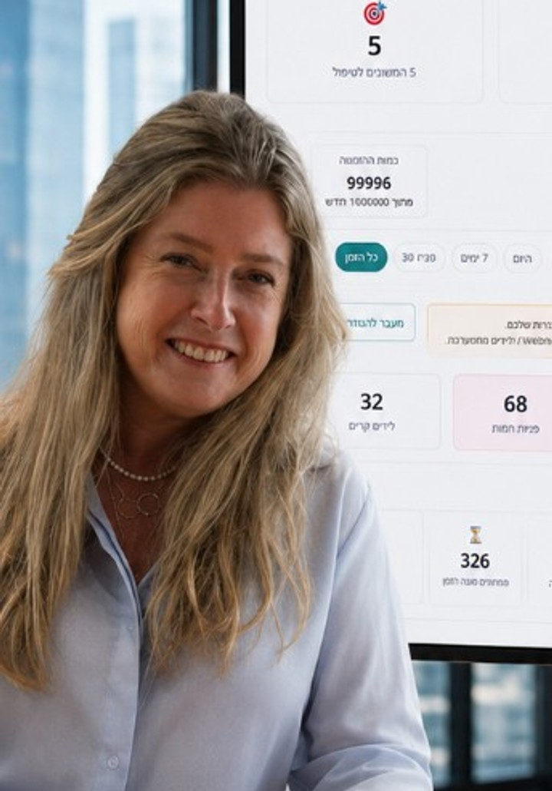

iHoogi מייצרת לכם
לינק חכם
iHoogi כמערכת המרכזית לניהול הפניות
מרכזת את הפניות, מנתחת ומתעדפת, מנתבת, מתריעה, מזכירה ועוקבת אחר הטיפול.
iHoogi מתחברת לכל מקום שבו הלקוחות שלכם משאירים פרטים, מרכזת ומנתחת את הפניות ומעלה לראש הרשימה את אלה שכדאי לטפל בהן קודם.
iHoogi מייצרת לכם
לינק חכם
מחברים אותו בכל מקום
שבו הלקוחות משאירים פרטים
כל הפניות והמידע
במקום אחד
iHoogi מנתחת,
מדרגת ומתעדפת
הפניות שכדאי לטפל בהן קודם
עולות לראש הרשימה
מה שבעבר דרש מערכות מורכבות, תקציבים גדולים ואנשי אוטומציה, היום נגיש גם לעסק שלכם.
ההקמה חינמית · מתחילים עם 50 פניות חינם
50 פניות חינם · ללא כרטיס אשראי

הפנייה נשלחה. מכאן הכול מתחיל לזוז.
מקבלים מיד לנייד ולמייל את פרטי הלקוח, התשובות והציון, ויכולים להתקשר, לשלוח WhatsApp או מייל בלי להתחיל את השיחה מאפס.
המענה האוטומטי יכול לא רק לאשר שהפנייה התקבלה, אלא גם להמשיך את המכירה לפגישה ביומן, WhatsApp, שאלון המשך, אתר או הצעד הבא שתבחרו.
לא צריך להחליף כלום ולא צריך להיות טכניים.
מותאם לעסק, לשאלות ולמידע שחשוב לכם לקבל.
באתר, בקמפיינים, ברשתות ובהודעות.
מענה תודה אוטומטי ומעוצב, או מענה אישי, שיכול גם להוביל לצעד הבא במכירה.
הפניות נכנסות עם המידע, מנותחות ומתועדפות, ואתם יודעים במי לטפל קודם.

מקבלים מהלקוח את המידע שבאמת צריך כדי לקבל החלטה.
מי דורש טיפול עכשיו, למה ומה הצעד הבא.
בצוות, כל פנייה יכולה להגיע לאדם המתאים לטיפול.
פניות ממקורות ופרסומים שונים מתרכזות במקום אחד.
התראות, תזכורות, סטטוס ופעולות המשך.
המידע המצטבר עוזר להבין מה עובד ולדייק את השיווק הבא. הקמפיין הבא כבר מתחיל מדויק יותר.
לא רק מאיפה הגיעו הכי הרבה פניות. מאיפה הגיעו הפניות הכי רלוונטיות.
דוגמה להמחשה. לא תוצאות לקוח אמיתיות.
מספר גדול לא אומר שהפניות מתאימות.
פחות להסתכל רק על כמות. יותר להבין מה באמת עובד.
ההקמה חינמית · מתחילים עם 50 פניות חינם
50 פניות חינם · ללא כרטיס אשראי
כ-50 שניות על הרעיון כולו.


אחרי עשרות שיחות עם בעלי ובעלות עסקים, אותה בעיה חזרה שוב ושוב:
"לא תמיד מספיקים לחזור לכולם. לפעמים חוזרים מאוחר מדי ומפספסים לקוח פוטנציאלי, לפעמים משקיעים זמן דווקא בפניות שפחות מתאימות, וכשהפניות מגיעות מכמה מקומות כבר לא תמיד זוכרים מאיפה הגיעה הפנייה ומה הלקוח בכלל רצה."
משם נולדה iHoogi.
רציתי שברגע שנכנסת פנייה, יהיה לעסק במקום אחד מי פנה, מאיפה הגיע, מה הוא מחפש ועד כמה הוא מתאים — ובעיקר למי כדאי לחזור קודם.
יכולות שבעבר דרשו מערכות מורכבות, תקציבים ואנשי אוטומציה — נגישות עכשיו גם לעסק שלכם.
סוף סוף אני יודעת למי לחזור קודם, במקום לענות לפי הסדר ולגלות שהרצינית כבר הלכה.
הפסקתי לבזבז חצי יום על פניות שרק בודקות מחיר. עכשיו אני רואה מיד מי באמת רוצה.
ההקמה חינמית · מתחילים עם 50 פניות חינם
50 פניות חינם · ללא כרטיס אשראי
מה אתם מציעים, למי זה מתאים, ומה חשוב לדעת.
שאלון, דף תודה ומענה, מעוצב לפי העסק שלכם.
כל פנייה מגיעה עם תעדוף, ואתם יודעים על מי לענות קודם.
ההקמה חינמית · מתחילים עם 50 פניות חינם
50 פניות חינם · ללא כרטיס אשראי